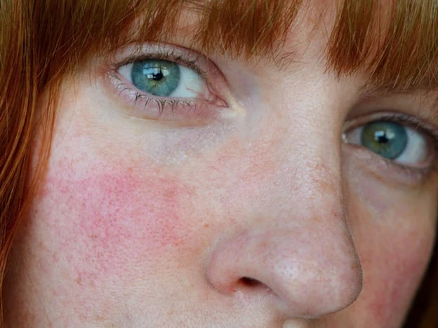
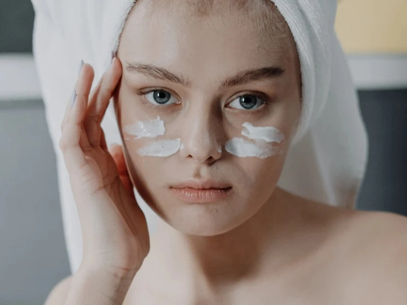
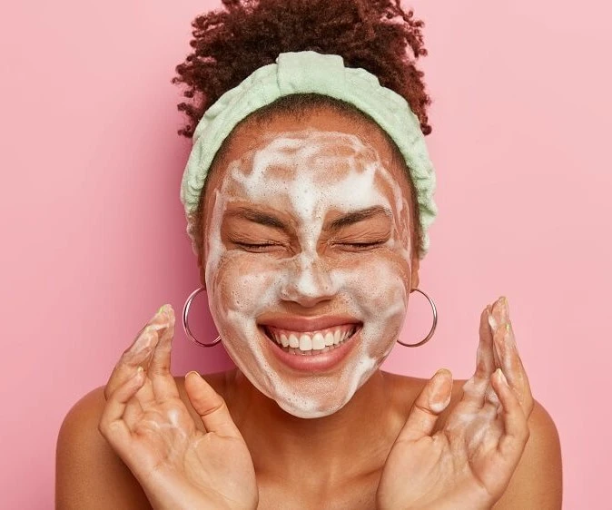

El Skincare es el cuidado que le damos a nuestra piel para mantenerla saludable. Se
asocia con las rutinas que seguimos y los productos que usamos para que la piel de nuestro rostro luzca
fresca y sana.
Alrededor del cuidado de la piel existe infinidad de información, mitos y realidades que pueden influir
en
tu decisión de compra de productos. Te ayudamos a tomar las mejores decisiones en esta GUÍA COMPLETA de
Skin
Care.
Tipos de piel
Por más sorprendente que parezca, muchos no conocen su tipo de piel, lo que ocasiona que
no se tomen las medidas de cuidado correcto y se termine por dañar aún más este órgano. La pregunta será
entonces, ¿cómo puedo saber qué tipo de piel tengo?
Piel normal:
Si tienes pocos granos, poros pequeños y tu piel no suele irritarse ni enrojecerse es probable que
tengas una piel normal. Este tipo de piel suele ser equilibrada, no es demasiado seca ni muy grasa,
y no
tiene manchas. No obstante, es importante que te protejas de los daños que causan los rayos UV
usando a
diario un filtro solar y que mantengas bajo control el nivel de estrés o la dieta si aparece algún
grano
Piel grasa:
Las pieles grasas se caracterizan por tener poros grandes, sensación grasa a lo largo del día y con
imperfecciones. Si bien es cierto que este tipo de piel puede ser un poco más difícil de cuidar,
también
tarda más en mostrar los signos del envejecimiento. ¡Eso es una buena noticia!
Un error común que cometen las personas con piel grasa, y que exacerba sus problemas, es la limpieza
excesiva.
Debes evitar usar demasiados productos y respetar tu
rutina de limpieza diaria.
Piel mixta:
Si tienes una sensación grasienta en la zona T, pero el resto del rostro es equilibrado tienes lo
que se
conoce como piel mixta. En este tipo de piel la grasa se suele acumular en la zona T, compuesta por
la
frente, la nariz y la barbilla, pero en el resto del rostro tiene una apariencia normal. El uso
regular de un limpiador suave y un humectante ligero hará que tu piel luzca más limpia y saludable.
Piel seca:
¿Sientes tu piel tensa, áspera o escamosa? ¡Podrías tener un tipo de piel seca! unque estas
características
suelen hacer que la piel luzca apagada y envejecida, la buena noticia es que existen soluciones muy
sencillas
para la sequedad.Los aceites, cremas y bálsamos faciales hidratantes son eficaces para conferir más
volumen a
la piel si los utilizas dos veces al día. También puedes usar un exfoliante suave una vez a la
semana
para eliminar
la acumulación de células muertas y dejar que la piel más joven y fresca que se encuentra debajo
reluzca.
Piel sensible:
Aunque todos los tipos de piel pueden reaccionar mal a diferentes principios activos o factores
ambientales,
la piel sensible se ruboriza con extrema facilidad y suele enrojecerse tras usar determinados
productos
para el
cuidado de la piel. Este tipo de piel también tiende a ser más delgada, tiene poros más pequeños y
suele
ser más
seca. Si tienes este tipo de piel, opta por productos dermatológicos con una acción suave y
relajante,
como los productos ultra suaves y sin perfume.
Rosacea

La rosácea es una afección común de la piel que causa rubor o enrojecimiento y vasos
sanguíneos visibles en la cara. La causa de la rosácea es desconocida, pero podría deberse a un sistema
inmunitario hiperactivo, a un factor hereditario, a factores del entorno o a una combinación de estos.
La rosácea no se desarrolla por una mala higiene y no es contagiosa.
Los brotes pueden desencadenarse por lo siguiente:
Bebidas calientes y comidas picantes, vino tinto y otras bebidas alcohólicas.
Temperaturas extremas, sol o viento
Emociones
Ejercicio
Medicamentos que dilatan los vasos sanguíneos, incluidos algunos medicamentos para la presión
arterial
Algunos productos cosméticos, para cuidados de la piel o del cabello
¿Qué cuidados extra podemos tener? ¿Qué alivios podemos darle a nuestra piel?
Los productos con ácido hialurónico son nuestros amigos. Atrapan la humectación en nuestra piel.
Las cremas con caléndula alivian mucho la rojez.
Evitemos productos con alcohol, parabenos, sulfatos, fragancias y exfoliantes de arrastre.
Importantísimo que tomemos mucha agua y usemos protector solar todo el año.
Hay tratamientos como Dermapen, Hifu y otros más que mejoran un poco, pero salen bastante caros.
Rutina de dia

Aunque una rutina básica puede componerse solo de limpieza, hidratación y protección del
sol,
nos extendemos en todos los pasos para que cada una elija a qué atenerse según sus gustos,
necesidades y,
por supuesto, tiempo.
LIMPIEZA. Durante el dia lo mejor es limpiarnos la cara con agua, ya que la noche anterior hicimos
la
doble limpieza.
TÓNICO. Este producto, que es líquido como el agua, cierra los poros y equilibra el pH cutáneo.
Compite con las esencias, que funcionan como tónicos pero también tiene ingredientes activos tipo
sérum.
SÉRUM. Es un concentrado de principios activos que penetra en la piel con más facilidad. Por
eso, sea del tipo que sea, como es más ligero que una crema, se aplica antes que esta.
CONTORNO DE OJOS y/o LABIOS. Al igual que el sérum, normalmente se presentan en fórmulas más
ligeras que las cremas y con una concentración mayor de principios activos específicos.
Así que también deberían extenderse antes de la crema hidratante o específica de tratamiento.
CREMA. Independientemente de si es hidratante, antiarrugas, reafirmante o antimanchas, sus
fórmulas suelen ser las más densas.
Además de cumplir su función específica, también sellan los nutrientes que se han aplicado antes de
esta
última.
Si tienes la piel muy seca, o en invierno, cuando necesita protegerse ante el frío, se puede usar un
aceite antes
de la crema: el primero hidrata y la segunda sella la nutrición.
PROTECCIÓN SOLAR, DE DÍA. La crema de tratamiento puede incluir protección contra los rayos UV
en forma
de spf. Pero, en caso contrario, hay que aplicar un protector específico.
Rutina de noche

Los buenos hábitos nocturnos resultan en una buena piel. Sigue estos cinco pasos de
cuidado de
la piel de noche con el fin de prepararla para el proceso de rejuvenecimiento nocturno:
LIMPIEZA: Lo mejor es realizar una doble limpieza, lo primero
hay que desmaquillar la piel con leche, bálsamo o agua micelar y después, tras
retirar el
producto elegido (o no hacerlo, el agua micelar por ejemplo no se saca), se prosigue con un
gel o
aceite limpiador, para una limpieza más en profundidad.
EXFOLIACIÓN. ¡Ojo! Normalmente no se realiza a diario, sino de una a tres veces por semana según
sea la piel, más o menos sensible. pero el día que se realiza, después de la limpieza.
TONICO: El tónico tonifica y prepara la piel para absorber los ingredientes esenciales que
se aplicarán
a continuación.
CONTORNO DE OJOS: Las cremas para el contorno de ojos suelen ser más ligeras que la mayoría
de los
tratamientos hidratantes y se aplican en la zona de debajo de los ojos. Para la
noche, elige una crema hidratante para el contorno de ojos que contribuya a reparar la
barrera de la
piel mientras duermes.
SERUM: Los sérums ofrecen concentraciones elevadas de determinados tratamientos. Los sérums
más
populares están formulados con ingredientes como el Ácido Hialurónico, que hidrata la piel,
o nutrientes
y antioxidantes, como la Vitamina C o E.
CREMA: Llega el momento de otro paso esencial en la rutina del cuidado de la piel: el
tratamiento
hidratante. Por la noche, tu piel entra en modo de reparación, así que necesitas una crema
específica
que la nutra e hidrate. El Retinol es un ingrediente fantástico para ello, ya que deja la
piel
visiblemente más lisa y luminosa y reduce las líneas de expresión y las arrugas.